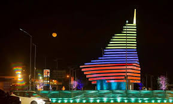
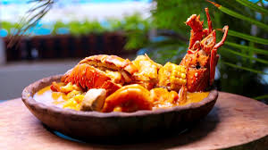
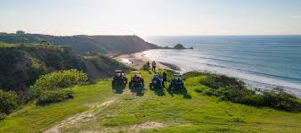
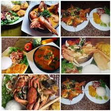
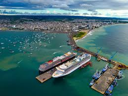
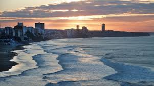
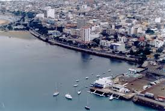
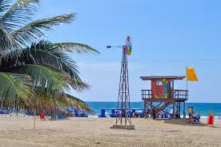

Viendo estas imagenes podemos entender que Manta es una bella ciudad
costera, llena de color, alegría y tradiciones. Se nota su
ambiente cálido y acogedor, con gente que disfruta de sus fiestas, su
cultura y su entorno. Estas imagenes reflejan cómo Manta combina la
belleza del mar con la vida activa de sus habitantes. Es un lugar
donde se vive con entusiasmo, donde cada rincón tiene algo especial que ofrecer.
Sin duda, es una ciudad que enamora.
| Paisajes | Comida |
|---|---|
| Manta es una ciudad hermosa ubicada en la costa del Ecuador. Es conocida por sus playas, su clima cálido y su gente amable. A mí me gusta mucho porque combina lo moderno con lo tradicional. Puedes disfrutar de ricos mariscos, pasear por el malecón, o simplemente relajarte en la playa viendo el atardecer. También es un puerto muy importante del país, y tiene mucha vida tanto en el día como en la noche. Sin duda, Manta es un lugar especial para vivir o visitar. |
La gastronomía de Manta es rica y variada gracias a su ubicación costera. Destacan platos como el ceviche de pescado, camarón y concha. El encebollado es uno de los más populares, ideal para el desayuno. También son típicos el viche y los mariscos frescos preparados de diferentes formas. Su comida refleja la tradición y frescura del mar. |
|  |  |
|  |  |
|  |  |
|  |  |
Es reconocida por su puerto internacional, sus playas turísticas como El Murciélago
y Tarqui, y su importante actividad pesquera. Además, es un destino turístico por su
gastronomía marina, su clima cálido y su cultura vibrante. También cuenta con
desarrollo urbano y eventos culturales que la hacen muy visitada.